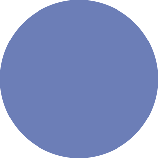
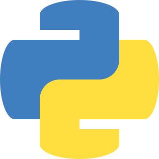
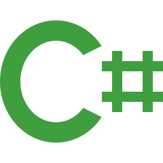
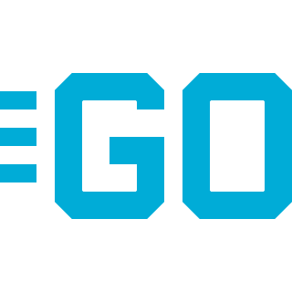

|
JavaScript |
Linguagem interpretada, estruturada e com tipagem dinâmica e fraca.
Queridinha da programação web anda junto do HTML e CSS.Com o Node.js
funciona fora de um navegador web, também é a escolha de vários
frameworks importantes como o React e o Angular.
|

|
Java |
Linguagem compilada e interpretada por uma máquina virtual,
estruturada com tipagem estática e forte. Uma linguagem de
programação segura e ótima para quem gosta de escrever várias linhas
de código. Devido a sua segurança é muito utilizada por empresas que
trabalham com informações confidenciais, órgãos públicos e bancos.
|
|

|
PHP |
Linguagem interpretada, possui uma sintaxe procedural e também pode
ser utilizada em orientação a objetos, se caracteriza por uma
tipagem dinâmica e fraca. Amplamente conhecida pelos WordPress em
toda a internet.
|
|

|
Python |
Linguagem pode ser usada de forma procedural ou orientada a objetos
e é dinamicamente tipada. A queridinha de todo mundo que começa na
programação, fácil de ler, resolve tudo em poucas linhas e tá sendo
usada em tudo, web, automação, banco de dados, IA, e por ai vai...
|
|

|
C# |
Linguagem compilada, fortemente tipada, desenvolvida pela Microsoft
como parte do ecossistema .NET. É usada principalmente para
desenvolvimento de softwares Windows, também pode ser usado pra
desenvolvimento web com o ASP.NET e por último, mas com certeza o
mais legal ela é usada no Unity para produzir jogos e é dai de onde
boa parte dos jogos indies vêm.
|
|

|
Go |
Linguagem compilada, fortemente tipada, e de código aberto, com
enfoque na rapidez e eficiência. Foi criada pela Google e está se
tornando popular para desenvolvimento back-end, principalmente em
grande escala. É uma das linguagens de programação que mais
economiza recursos do nosso planeta!
|